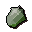

Uncut jade
| Config name | uncut_jade |
| Item id | 1627 |
| Value | 30 gp |
| Weight | 3g |
| Members | Yes |
| Tradeable | Yes |
| Stackable | No |
| Defined in | scripts/skill_crafting/configs/gem/uncut_gems.obj |
Uncut jade
This would be worth more cut.
How to make
| Skill | Level | XP | Ingredients | Tool | How | Where | Makes |
|---|---|---|---|---|---|---|---|
| Mining | 40 | 65.0 | — | pickaxe | click it | rock | 1 one roll of gem_rock_table: 30 in 128 |
Used to make
| Skill | Level | XP | Ingredients | Tool | How | Where | Makes |
|---|---|---|---|---|---|---|---|
| Crafting | 13 | 20.0 | use on item |  Jadecan spoil into Crushed gemstone |
In drop tables
Quests
Referenced in scripts
scripts/_test/scripts/cheats/cheat_bank.rs2scripts/general_use/scripts/hammer.rs2scripts/quests/quest_itexam/scripts/area_digsite.rs2scripts/skill_crafting/scripts/gem/uncut_gem.rs2